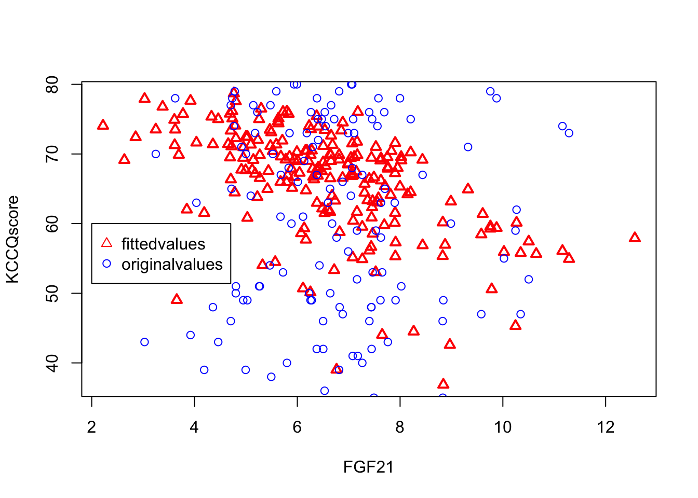
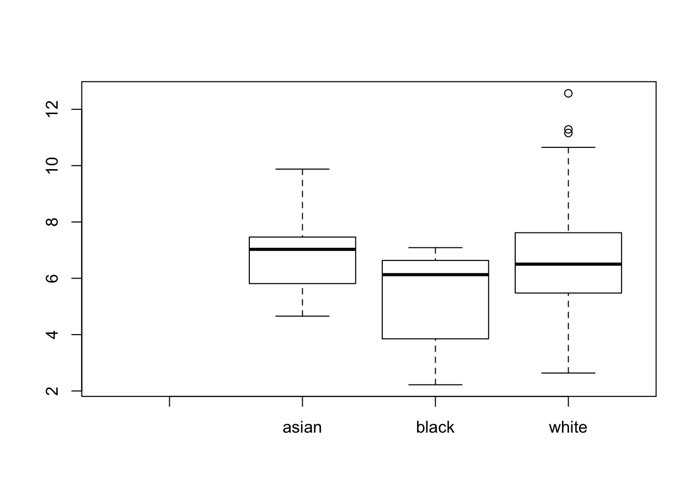

Last updated: 2019-07-16
Checks: 6 0
Knit directory: KKScardiology/
This reproducible R Markdown analysis was created with workflowr (version 1.3.0). The Checks tab describes the reproducibility checks that were applied when the results were created. The Past versions tab lists the development history.
Great! Since the R Markdown file has been committed to the Git repository, you know the exact version of the code that produced these results.
Great job! The global environment was empty. Objects defined in the global environment can affect the analysis in your R Markdown file in unknown ways. For reproduciblity it’s best to always run the code in an empty environment.
The command set.seed(20190709) was run prior to running the code in the R Markdown file. Setting a seed ensures that any results that rely on randomness, e.g. subsampling or permutations, are reproducible.
Great job! Recording the operating system, R version, and package versions is critical for reproducibility.
Nice! There were no cached chunks for this analysis, so you can be confident that you successfully produced the results during this run.
Great! You are using Git for version control. Tracking code development and connecting the code version to the results is critical for reproducibility. The version displayed above was the version of the Git repository at the time these results were generated.
Note that you need to be careful to ensure that all relevant files for the analysis have been committed to Git prior to generating the results (you can use wflow_publish or wflow_git_commit). workflowr only checks the R Markdown file, but you know if there are other scripts or data files that it depends on. Below is the status of the Git repository when the results were generated:
Ignored files:
Ignored: .DS_Store
Ignored: .Rhistory
Ignored: analysis/.DS_Store
Ignored: docs/.DS_Store
Untracked files:
Untracked: data/
Note that any generated files, e.g. HTML, png, CSS, etc., are not included in this status report because it is ok for generated content to have uncommitted changes.
These are the previous versions of the R Markdown and HTML files. If you’ve configured a remote Git repository (see ?wflow_git_remote), click on the hyperlinks in the table below to view them.
| File | Version | Author | Date | Message |
|---|---|---|---|---|
| rmd | d17851a | Sarah Urbut | 2019-07-16 | wflow_publish(“analysis/helpingwithR.rmd”) |
First, we read in the file and look at its dimensions:
data=na.omit(na.omit(data.frame(read.csv("~/desktop/KTS data.csv",header=T))))
dim(data)[1] 209 271There are 209 rows and 271 columsn. We can extract the colnames if we’re interested and store the first 23 columns as covariates.
head(colnames(data))[1] "patient_id" "race" "afib" "hypertension"
[5] "hyperlipidemia" "pulmonary_htn" covariates=data[,1:23]model1=lm(formula = data$kccq_score ~ data$FGF21 + data$echo_bmi + data$age + data$diabetes +data$female +data$gfr)
summary(model1)
Call:
lm(formula = data$kccq_score ~ data$FGF21 + data$echo_bmi + data$age +
data$diabetes + data$female + data$gfr)
Residuals:
Min 1Q Median 3Q Max
-47.131 -18.071 3.326 17.176 42.971
Coefficients:
Estimate Std. Error t value Pr(>|t|)
(Intercept) 82.856963 20.418176 4.058 7.07e-05 ***
data$FGF21 -1.815885 0.911746 -1.992 0.04776 *
data$echo_bmi -0.613453 0.193686 -3.167 0.00178 **
data$age 0.175792 0.184144 0.955 0.34090
data$diabetes -1.852790 3.581502 -0.517 0.60550
data$femalemale 3.192472 3.047709 1.047 0.29612
data$gfr -0.008516 0.084204 -0.101 0.91954
---
Signif. codes: 0 '***' 0.001 '**' 0.01 '*' 0.05 '.' 0.1 ' ' 1
Residual standard error: 20.88 on 202 degrees of freedom
Multiple R-squared: 0.1193, Adjusted R-squared: 0.0931
F-statistic: 4.559 on 6 and 202 DF, p-value: 0.0002321Your questions:
^does this mean FGF21 is significantly associated with KCCQ score after accounting for BMI, age, diabetes, sex, and GFR (since p value is 0.047)?Yes, in a strictly frequentist sense if you use the p value to assign significante. You could also examine the 95% confidence interval of the coefficient for FGF21
coefficients=model1$coefficients
std.error=coef(summary(model1))[, "Std. Error"]
lowerbound=coefficients[2]+std.error[2]*qnorm(0.025)
upperbound=coefficients[2]+std.error[2]*qnorm(0.975)We see that the 95% confidence interval for this coefficient, -3.6028745, -0.0288959 does not cover 0.
^does this mean that age, DM, sex, and GFR are not associated with KCCQ score (p value >0.05 for each)? Or do I need to fit each variable into a separate model and perform ANOVA? similarly, does this means that BMI is associated with KCCQ score (since p value <0.05)?Great questions. Let’s break it down. Essnetially the only conclusion we can draw is that in this model (and that’s critical, every conclusion applies to a specific model and not a model which might include different or additional covariates) these covariates are not associated according to a frequentist signficance threshold of 0.05. But you might ask in a stepwise fashion what if we exclude one of the covariates,say DM, is age then signficiant? A great example of this is watching how the J shaped curve for composite cardiovascular risk does not change when controlling for race, gender, and DM, but does after controlling for age; at each iteration of the model, a low diastolic blood pressure is singificantly associated with increased CVD risk, but when age is added in, this is no longer true, becuase age better explains the increased risk of death and diastolic blood pressure was probably just a correlated ‘marker’ that masked underlying risk by age. It’s coming out in this week’s NEJM, just saw ti in the print edition. To test your question, we can try something simpler than ANOVA (which aims to find the model that best explains the greates proportion of variation while discounting for additional parameters). WE simply add each covariate in a stepwise fashion. I"ll just do it for 3, using bmi as the baseline covariate, and exclude the intercept term with -1:
m1=lm(formula = data$kccq_score ~ data$FGF21 + data$echo_bmi-1)
m2=lm(formula = data$kccq_score ~ data$FGF21 + data$echo_bmi+ data$age-1)
m3=lm(formula = data$kccq_score ~ data$FGF21 + data$echo_bmi+ data$age+data$diabetes-1)
summary(m1)
Call:
lm(formula = data$kccq_score ~ data$FGF21 + data$echo_bmi - 1)
Residuals:
Min 1Q Median 3Q Max
-67.329 -14.580 6.484 24.345 66.824
Coefficients:
Estimate Std. Error t value Pr(>|t|)
data$FGF21 6.0864 0.8618 7.063 2.44e-11 ***
data$echo_bmi 0.7421 0.1886 3.934 0.000114 ***
---
Signif. codes: 0 '***' 0.001 '**' 0.01 '*' 0.05 '.' 0.1 ' ' 1
Residual standard error: 28.89 on 207 degrees of freedom
Multiple R-squared: 0.8294, Adjusted R-squared: 0.8278
F-statistic: 503.3 on 2 and 207 DF, p-value: < 2.2e-16summary(m2)
Call:
lm(formula = data$kccq_score ~ data$FGF21 + data$echo_bmi + data$age -
1)
Residuals:
Min 1Q Median 3Q Max
-50.599 -16.346 3.477 16.747 54.089
Coefficients:
Estimate Std. Error t value Pr(>|t|)
data$FGF21 -0.77702 0.86491 -0.898 0.37
data$echo_bmi -0.11876 0.16028 -0.741 0.46
data$age 0.99576 0.08148 12.220 <2e-16 ***
---
Signif. codes: 0 '***' 0.001 '**' 0.01 '*' 0.05 '.' 0.1 ' ' 1
Residual standard error: 22.05 on 206 degrees of freedom
Multiple R-squared: 0.9011, Adjusted R-squared: 0.8997
F-statistic: 625.8 on 3 and 206 DF, p-value: < 2.2e-16summary(m3)
Call:
lm(formula = data$kccq_score ~ data$FGF21 + data$echo_bmi + data$age +
data$diabetes - 1)
Residuals:
Min 1Q Median 3Q Max
-48.121 -16.296 3.856 16.736 53.556
Coefficients:
Estimate Std. Error t value Pr(>|t|)
data$FGF21 -0.66121 0.87733 -0.754 0.452
data$echo_bmi -0.08249 0.16653 -0.495 0.621
data$age 0.98231 0.08322 11.804 <2e-16 ***
data$diabetes -2.93343 3.61662 -0.811 0.418
---
Signif. codes: 0 '***' 0.001 '**' 0.01 '*' 0.05 '.' 0.1 ' ' 1
Residual standard error: 22.07 on 205 degrees of freedom
Multiple R-squared: 0.9014, Adjusted R-squared: 0.8995
F-statistic: 468.7 on 4 and 205 DF, p-value: < 2.2e-16Interestingly, FGF21 is signficiatnly associated with kccq score when controlling for only BMI, but not when controlling for age, meaning that a good proportion of the variation in kccq score that is explained by FGF21 levels is better explained by age.
^do I need to correct for doing multiple comparisons (eg, false discovery rate)?You only correct for FDR when asking multiple questions about associated variables (and not adjusted variables, though this is somewhat of an arbitrary distinction). So for example, if we adjusted for age, gender, race and bmim, and then asked if 20 of your metabolites were associated with kccq score, we would need to report a q value of local false discovery rate or (sign) a naiive bonferroni adjustment, but this is usually done with testing each metablite separately rather than in a model that controls for all simultaneously. So traditional analsysi would probably fit data\(kccq_score ~ data\)FGF21 + data\(echo_bmi + data\)age + metab1 and then data\(kccq_score ~ data\)FGF21 + data\(echo_bmi + data\)age + metabolite2 etc., and then correct the reported coefficients in each model when reporting a list of many metabolites. Does that make sense?
how can I plot FGF21 over KCCQ score after adjusting for BMI, age, diabetes, sex, and GFR? When I use the plot function, it plots GFR over KCCQ scoreI’m not exactly sure qhat you’re asking, but what I think you want is the model fit for predicted kccq score over the initial FGF21.
plot(data$FGF21,model1$fitted.values,xlab="FGF21",ylab="KCCQscore",pch=2,col="red",lwd=2)
points(data$FGF21,data$kccq_score,col="blue",pch=1)
legend(2,60,c("fittedvalues","originalvalues"),pch=c(2,1),col=c("red","blue"))
this doesn't seem correct. The Asian group is missing. How can I code Asian, Black, and White as separate groups (eg, 1, 2, 3). Again, I think I need to account for multiple comparisons using FDR or Bonferroni. Ultimately, I would ideally like to account for race in model 1 for to see if it affects KCCQ score on FGF21The best way is to examine the model matrix and see how the linear algebra is done. It looks like asian is treated as the intercept case, and then black and white are added to this. So, a white individual’s kccq score would be the intercept term + white coefficient, and a black individual would be the intercept + -1.24, and asian would be just the intercet. I’ve shown you the predictions for a sample white, black and asian individual.
model2=lm(data$FGF21 ~data$race)
head(model.matrix(model2)) (Intercept) data$raceblack data$racewhite
1 1 0 1
2 1 0 1
3 1 0 1
4 1 0 1
5 1 0 1
6 1 0 1predict(model2)[which(data$race=="white")[1]] 1
6.615245 predict(model2)[which(data$race=="black")[1]] 124
5.43714 predict(model2)[which(data$race=="asian")[1]] 33
6.682517 If you want to avoid an intercept, simply subtract 1 fromn the design matrix. YOu see that now everyone just has an indicator variable for their race.
model2=lm(data$FGF21 ~data$race-1)
head(model.matrix(model2)) data$raceasian data$raceblack data$racewhite
1 0 0 1
2 0 0 1
3 0 0 1
4 0 0 1
5 0 0 1
6 0 0 1boxplot(data$FGF21 ~data$race-1)
Here you do NOT need to control for multiple comparisons because you are really just doing a 1 factor (3 level) ANOVA: there is just one variable with three different levels. I hope this helps, and PLEASE let me know if I can help. SO glad you like R!
sessionInfo()R version 3.5.2 (2018-12-20)
Platform: x86_64-apple-darwin15.6.0 (64-bit)
Running under: macOS Mojave 10.14.5
Matrix products: default
BLAS: /Library/Frameworks/R.framework/Versions/3.5/Resources/lib/libRblas.0.dylib
LAPACK: /Library/Frameworks/R.framework/Versions/3.5/Resources/lib/libRlapack.dylib
locale:
[1] en_US.UTF-8/en_US.UTF-8/en_US.UTF-8/C/en_US.UTF-8/en_US.UTF-8
attached base packages:
[1] stats graphics grDevices utils datasets methods base
loaded via a namespace (and not attached):
[1] workflowr_1.3.0 Rcpp_1.0.1 digest_0.6.20 rprojroot_1.3-2
[5] backports_1.1.4 git2r_0.25.2 magrittr_1.5 evaluate_0.14
[9] stringi_1.4.3 fs_1.3.0 whisker_0.3-2 rmarkdown_1.13
[13] tools_3.5.2 stringr_1.4.0 glue_1.3.1 xfun_0.8
[17] yaml_2.2.0 compiler_3.5.2 htmltools_0.3.6 knitr_1.23